Replacing GitHub Classroom
Handing out assignments, collecting them, grading them, and getting feedback back to students — built for the nine-month fullstack program.
The ask at the end is one hour of your time, not a decision about next term.
Part one
The gap
Slide 2
The four things we lost when GitHub Classroom and the LMS went away
| What it did | What that meant in practice |
|---|---|
| Handed out assignments | Every student got their own copy of the starter code, named so we could find it |
| Collected the work | We knew who had handed in, who had not, and when |
| Recorded a grade a student could read | A student could see their score and their feedback without asking for it |
| Shared the rest of the course | Readings, lecture notes, and recordings sat next to the work they belonged to |
- GitHub Classroom did the first two, for coding work only
- The LMS — Canvas and Google Classroom — did all four, for everything
Slide 3
Grading one assignment today takes five steps across four systems
- Clone the student's repository — GitHub
- Run the tests and work through the manual grading toolkit — your own machine
- Post the feedback as a pull request comment — GitHub
- Re-enter the grade — the LMS
- Re-enter the grade and its metadata — Salesforce
- Transcription errors — three chances for a number to arrive somewhere as a different number
- Hours in the wrong place — time re-typing a grade is time not spent reading a student's code
Slide 4
Opportunity to automate the AI grading step
-
We already have grading logic defined — rubrics, answer keys, sample reports,
meta prompts — in
grading-toolkit/ - We should still evaluate every AI report, but this application can start the generation process for us
- Our competency framework asks students to seek feedback and act on it — which only works if the feedback is substantive enough to act on
Part two
What exists
Slide 5
How an assignment moves from handout to grade
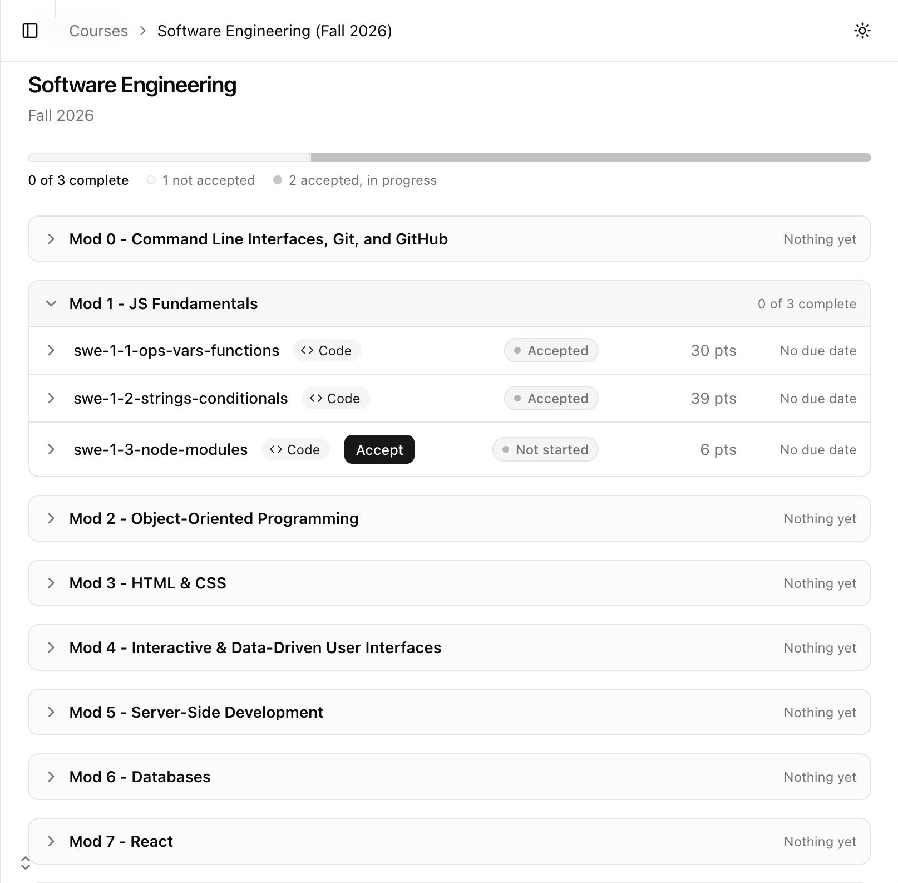
The student's assignment panel, with Acceptscreenshots/05-accept.gif
Slide 6
Setting up a cohort, getting students in, and ending a term
- Create a cohort, or copy last term's — assignments and course units come with the copy; students, groups, and grades do not
- The short name is permanent — it prefixes every repository the cohort generates, so creating one has a review step
- A join link, plus a list of who you expect. A student is admitted by a link and a list, never by either alone
- Regenerating the link locks out anyone who has not used it yet; everybody already in stays in
- A separate co-teaching link grants a cohort and never a role
- Groups split a cohort between two instructors and narrow every screen to your half
- Removing a student does not take their work back — they keep their feedback, and restore puts them back
- Archive at the end of term, reversibly. Grades stay readable
- Transfer ownership. Delete is the owner's alone, only on an archived cohort, and never touches the GitHub repositories
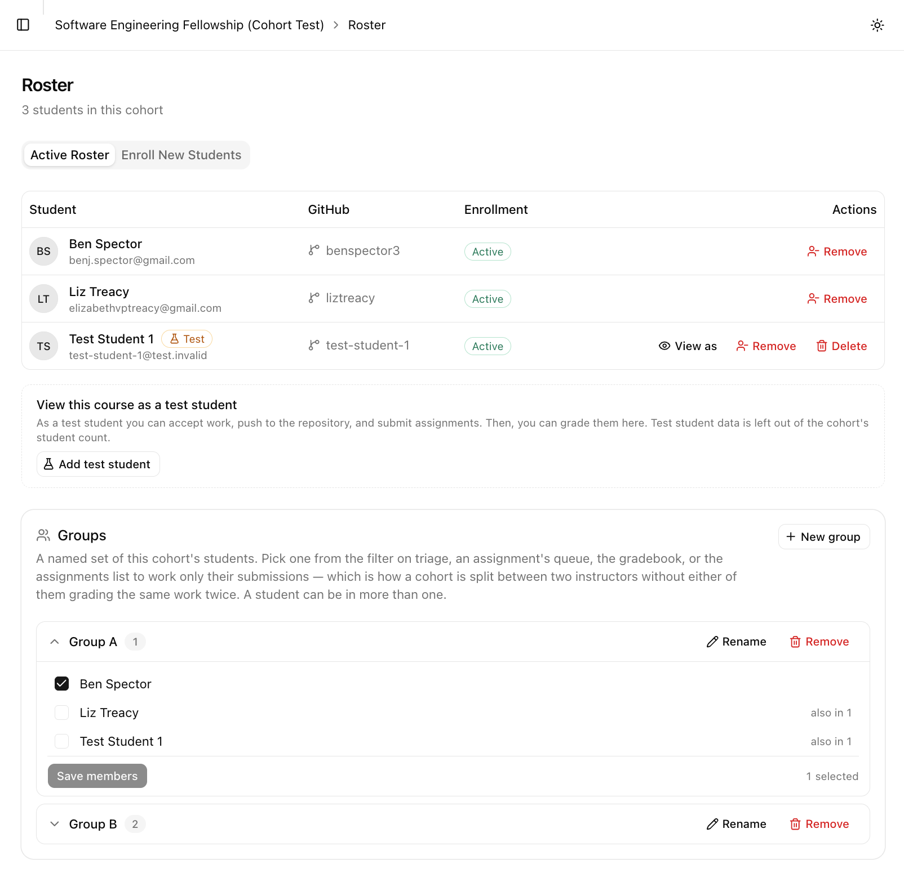
The roster — expected students, the join link, and groupsscreenshots/06-roster.png
Slide 7
The four kinds of assignment, and how one is authored
| Kind | What the student gets | Hands in | Graded by |
|---|---|---|---|
| Code | A repository from your template | A pull request | The pipeline, then you |
| Google Drive | Google's own "make a copy" prompt | A link to their copy | You |
| File upload | Nothing — the instructions are all they read | A file, in private storage | You |
| Link | Nothing | A link to work made elsewhere | You |
- An assignment is a draft until you publish it. A unit that is full to you reads as empty to a student
- The form checks the repositories before a student can hit the failure — the template must carry GitHub's template flag, a public answer-key repository is refused, and it lists which files it resolved
- A due date carries a time, and both are read and written in the school's timezone rather than the browser's — so a deadline set from a laptop still on Pacific is the deadline the student reads
- Copy an assignment into another cohort you teach, matching the course unit by name
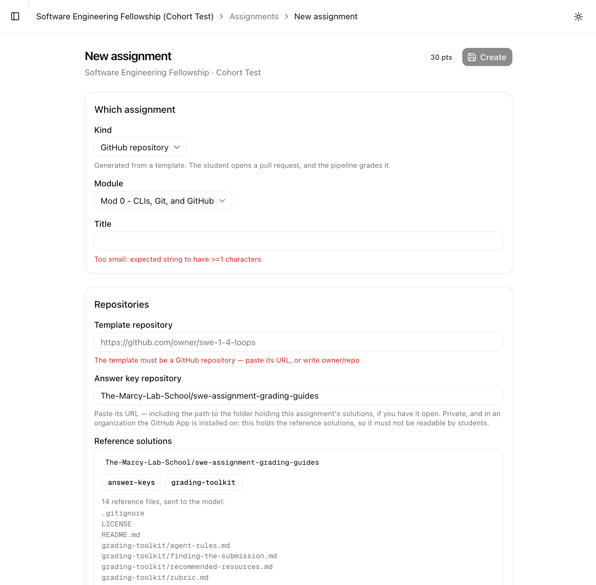
The new-assignment form, with the repository checksscreenshots/07-authoring.png
Slide 8
Course units, and the readings that live under them
- A module, a project, and an assessment are one thing — a named, ordered container of assignments and resources. What differs is only what it is for: skill development, skill application, skill evaluation. That is a category on the unit, not three separate features
- You name, order, and reorder them yourself, per cohort. The word follows the category, so a project's list reads "Deliverables" and an assessment's "Parts"
- Under each unit, beside its assignments: readings, Markdown notes that open in place, and video that plays without leaving the page — so a project can carry its own brief
- Resources have no publish step — students see one as soon as you add it
- Assignments order themselves by due date; units you drag
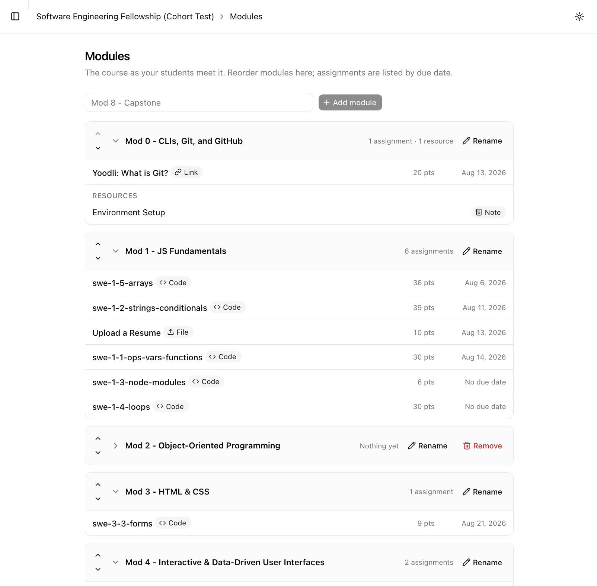
A unit expanded, with its assignments and its resources beneath themscreenshots/08-module-resources.png
Slide 9
How a report is produced, and who has the last word
1 · Before the model sees anything
- Your tests, from the template, run against the student's code in a sandbox with no network access and no credentials
- The template's tests always win — a student who edits them gets the real ones
2 · Then one model call per rubric section
- Given the rubric, the answer key, the student's code, and the verified test results
3 · Then a check that is not the model
- Ordinary code verifies the report's arithmetic and every claim it makes about the tests
- Points that do not add up, a claim about a test that never ran, full marks next to failures, a flag raised with no point deducted for it, a score out of a maximum the section does not carry — every contradiction it finds is named on the draft, in the words of the rule it broke
- It does not sort reports into ones you must read and ones you may skip, because you read all of them. What it does is tell you where to look first
4 · Then you
- Reports are always drafts. Nothing is ever posted automatically
- The report you are about to send is the first thing on the screen; the rubric rows and the test evidence sit beneath it
- Your edit is kept beside the model's original, not over it
- Three things are refused outright at approval: approving twice, approving a draft describing a commit the student has pushed past, and approving a report whose text states a different score than the one recorded
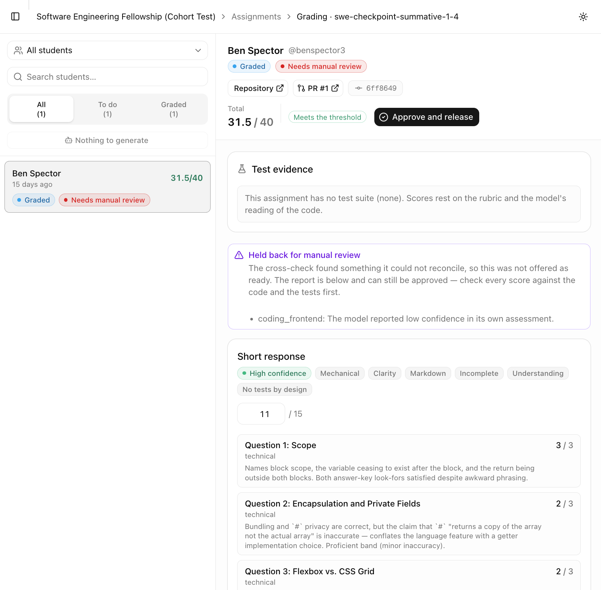
A draft report in the review pane, with an editable sectionscreenshots/09-report-review.png
Slide 10 · the slide that decides it
The instructor's weekly screens: triage, the student record, the gradebook
| The pile | What you do about it |
|---|---|
| No report yet | Press generate |
| To grade by hand | Read it and write the feedback |
| Drafts ready to review | Read, edit, approve — the cross-check names anything it found |
| Grading failed | Broke before a report existed. Not a zero |
| Approved, never delivered | Grade is recorded; the comment needs a retry |
| Generating | In flight right now |
- Generate every report in the pile with one press
- One student's whole record, from their name anywhere
- The gradebook, totalled both ways, downloads as CSV
- Filter any of it to your own fifteen students
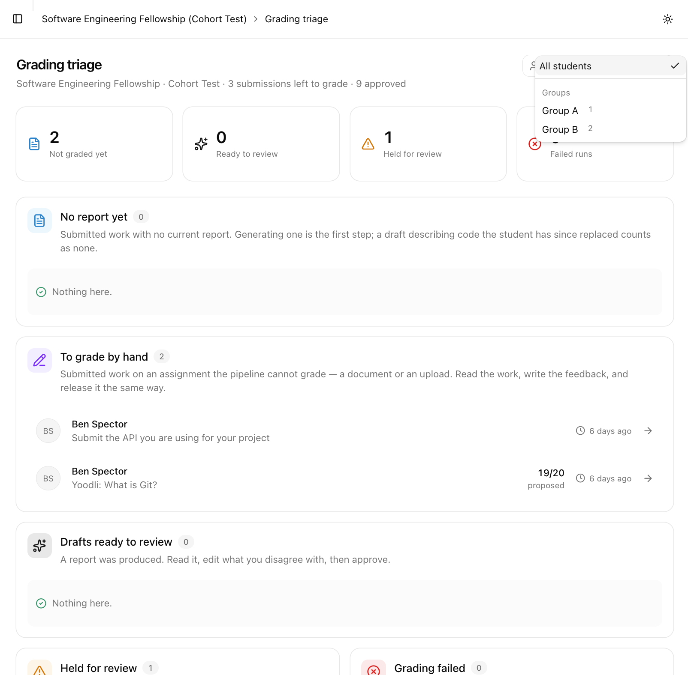
Triage — the six piles, with countsscreenshots/10-triage.png
Slide 10, continued
The other two axes: one student's record, and the gradebook
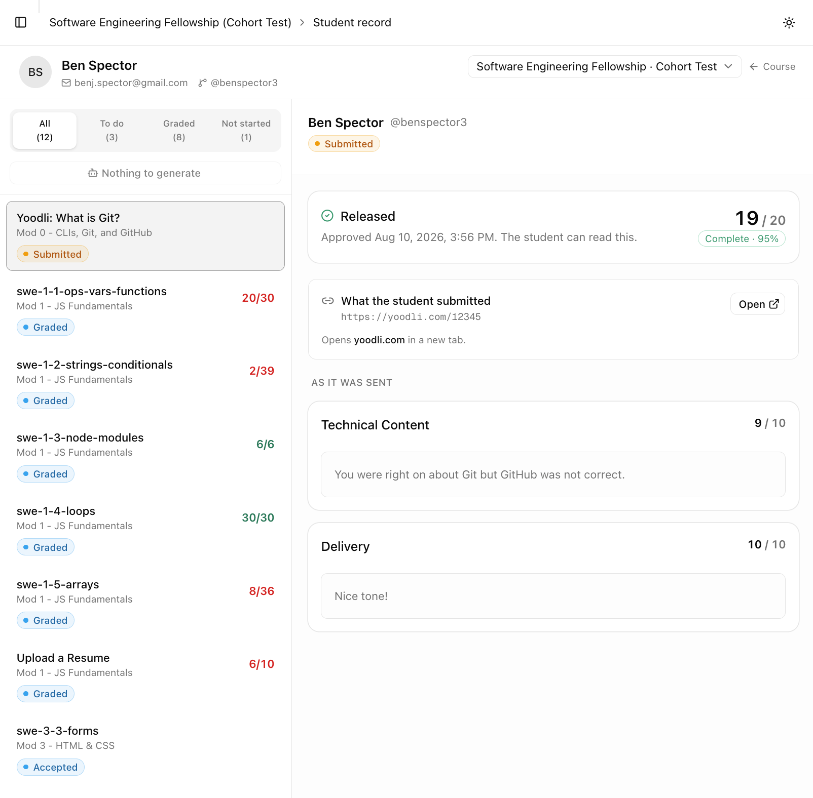
One student's whole record in the cohortscreenshots/10-student-record.png
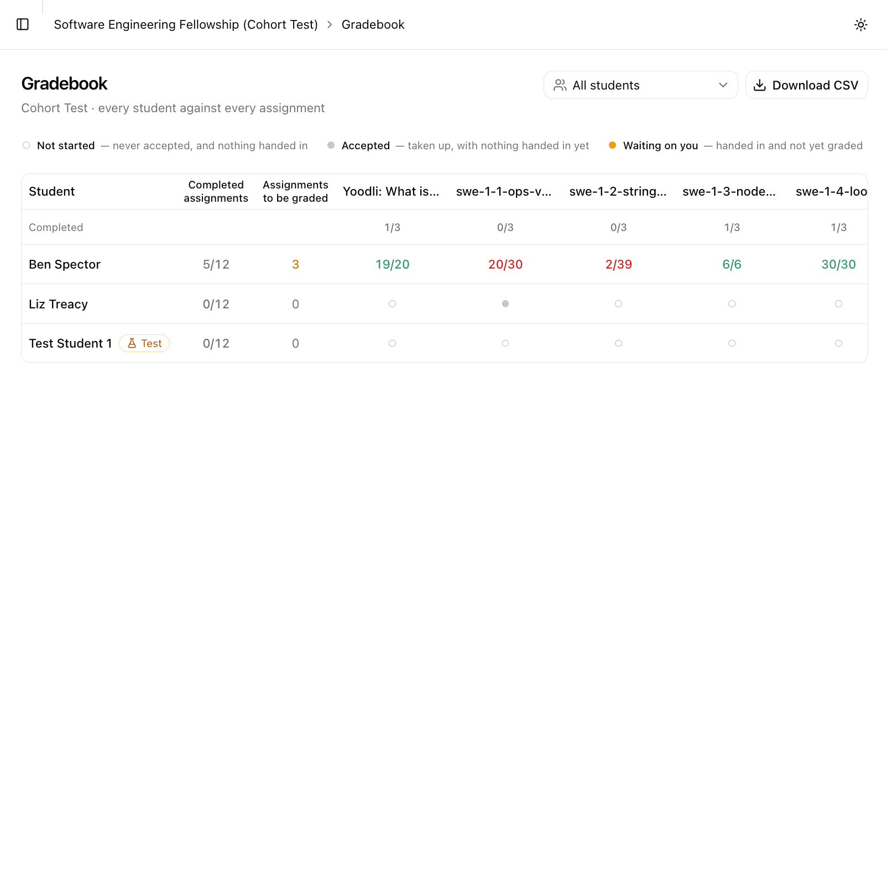
The gradebook — every assignment against every studentscreenshots/10-gradebook.png
Slide 11
What a student sees
- One dashboard across every cohort: Weekly attendance · Overdue · Needs another attempt · Coming up · Feedback to read · Started but not handed in
- Nothing on it can be dismissed — handing in clears a deadline, marking feedback read clears a report
- Per course: a progress bar and a plain count — "seven of nine complete"
- Their feedback: every round, oldest first, kept forever. A resubmission is graded fresh, so both survive
- Asking for another look: push the work, then press the button. Pushing is not asking
- Checking in: a four-digit code that can be entered either on the Dashboard or on the course's own Attendance screen.
- We can see whether they read it — and that gates nothing. Information for a mentor conversation
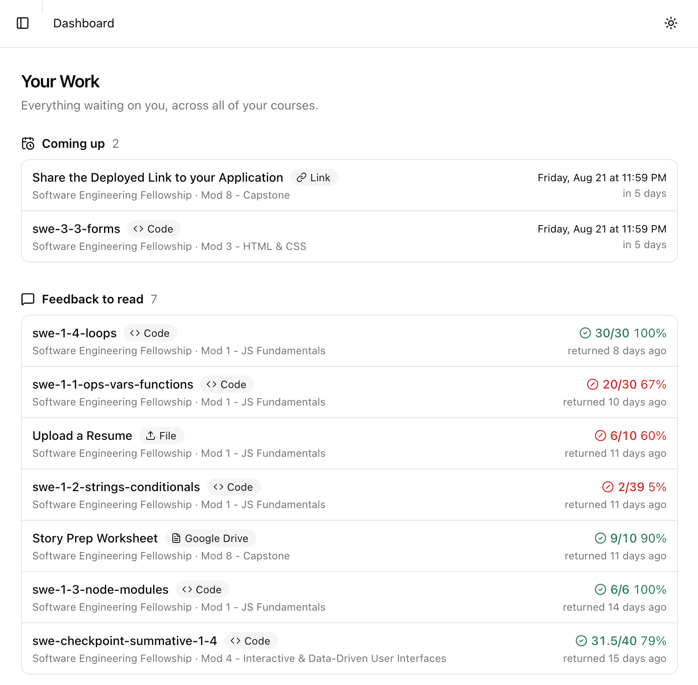
The student dashboard — every list, nothing dismissiblescreenshots/11-student-dashboard.png
Slide 12
Attendance: one of the two things here that are new rather than restored
- What it replaces: a Google Form where somebody edited a three-digit code by hand every morning, and a picklist that let anybody submit as anybody
- One press starts a session, and one code lasts as long as check-in is open. It sits on the attendance screen beside a Copy button, so it is distributed once — paste it into the chat and the shared screen is never involved. Projecting it is still there for a room with a projector, as one option rather than the only route
- The code proves presence; being signed in proves who. The form asked one short code to do both, which is why it did neither
- You can replace the code mid-session if you decide it has leaked — a judgment call with a button, rather than a clock deciding for you
- The board fills in live, and four buttons per row fix the ones that need it — phones die, people are in the bathroom
- It ends when you press End, or after ninety minutes. Extend buys thirty more. The backstop stops a session nobody closed leaving a working code alive until the next class
- The second tab is the whole term: who is drifting, a grid, and a CSV with a column saying whether each mark came from the fellow or from staff
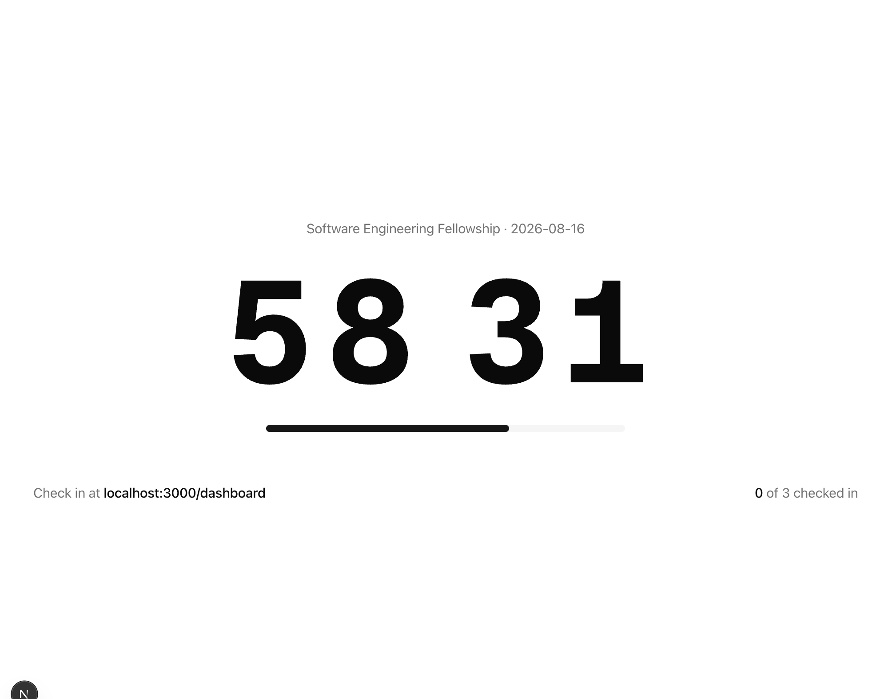
The code beside the Copy button, and the board as the instructor sees itscreenshots/12-attendance-code.png
What it does not solve, and I will not claim otherwise: a fixed code can be sent to somebody at home and will work until class ends. That is collusion rather than authentication, and the answers to it cost more than the problem — a rotating code bought very little, because it had to keep the previous one working too. What the code does defend against is guessing, and that comes from the two attempt ceilings rather than from a clock.
Slide 12b
The GCF: the other thing that is new rather than restored
- The General Coding Framework is sat at CodeSignal, outside this application. A fellow practises against mocks, then sits a proctored one whose score goes to employers
- It is not coursework — no assignment, no submission, nothing handed in — so until now it could not be expressed here at all, and lived in a spreadsheet beside nothing else about the fellow
- You import CodeSignal's own export. The file is parsed in the browser and never uploaded, so a term of personal email addresses does not go into our storage
- Importing the same export twice changes nothing, and an import fills in a score somebody typed by hand rather than sitting a second record beside it
- Fellows are matched on the address they used at CodeSignal, which resolves most rows on its own; the rest you assign once and it remembers. Deliberately never matched on name — a nickname or a changed surname writes one fellow's score onto another's record, silently
- Mock and proctored are never added, averaged, or compared. Each kind shows attempts, best, and the last three
 The gradebook's GCF tab, with both kinds and one student selected
The gradebook's GCF tab, with both kinds and one student selected
screenshots/12b-gcf.png
/gcf, flag and note included.It takes no part in whether a course is complete. A course is complete when its units are; folding in an external benchmark would make every course uncompletable for anybody who has not sat the test yet.
Slide 13
Admins, instructor invitations, and test students
- A third role. Admins are instructors who can also decide who else is staff
- Instructor invitations are the only route to becoming staff — single use, expires in seven days, and you copy and send it yourself
- Admin can be granted and revoked, but the last admin cannot be revoked and a student cannot be promoted directly
- An admin reaches every cohort without being added to it — triage, gradebook, roster, settings, ownership
- Test students are real, working student accounts an admin adds to a cohort — needed because an admin cannot accept an assignment
- "View as" puts you inside the application as that test student, with an amber banner
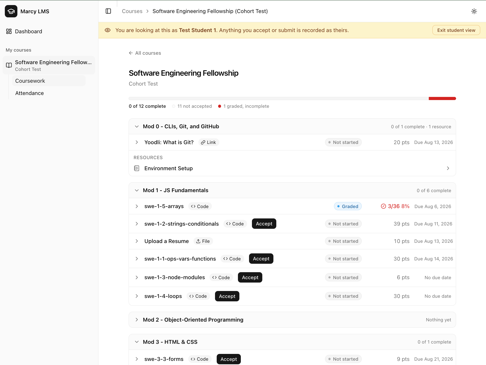
The "View as" banner over a test student's coursescreenshots/13-view-as.png
Slide 14
All four services, restored
| What we lost | What does it now |
|---|---|
| Handed out assignments | Accept, on the student's course page — a repository, a Drive copy, or nothing to hand out |
| Collected the work | The pull request, the uploaded file, or the submitted link — and triage, which says who has not |
| Recorded a grade a student could read | Approve, which records the grade, comments on the work, and shows the student at the same moment |
| Shared the rest of the course | Resources, under the course unit they belong to |
And two that were never on the list: attendance and the GCF. Neither was lost with the LMS — attendance was a Google Form somebody edited by hand every morning, and a fellow's CodeSignal results lived in a spreadsheet nobody could see beside their coursework — so these are the two things here that are new rather than restored. Slides 12 and 12b.
Slide 15
What it honestly does not do
- Attendance knows nothing about a calendar. A session exists because somebody started one, so nothing notices a morning nobody opened — and without term dates nothing could
- It sends no email. Every link — join, co-teaching, invitation — is one you copy and send yourself
- Nothing notifies a student. Not a publish, not a deadline, not a grade. The only message that leaves is GitHub's own email about the comment
- Nothing syncs to Salesforce or the LMS yet. Grades are still re-entered by hand
- Nothing grades itself when a student pushes. A person starts it
- No summary of one student across a term. You read down their record
- You cannot write your own rubrics yet. Four fixed kinds, all coding — which is why a resume gets no AI report. Slide 15b is what writing one would take
- The code is read on GitHub, in another tab. No diff next to the report. Top of the roadmap
I would rather you heard this from me now than found it in an hour with me watching.
Slide 15b
What it took to make one rubric gradeable, and who did that work
The method: mark it by hand, then compare
- Five submissions were graded by an instructor by hand, then graded again by the pipeline and the two reports read side by side. Where they disagreed, the rubric was usually the thing that was wrong
What the rubric had to change, and why
- Adjectives became counts. "Demonstrates deep understanding" and "minor errors" cannot be checked by anybody, so they became a count of defects: none is a 3, exactly one is a 2, two or three is a 1
- A missing required idea had to be named as a defect. The rubric described what a good answer contains and never said that omitting a required idea costs a point — so a correct answer that skipped one kept full marks
- The writing score went from five vague qualities to two checkable ones, and had to say out loud what is feedback rather than a deduction: a long-winded sentence, weak flow, a run-on. Without that line, every unpolished submission drifted a point down
And what the answer keys had to change
- One checkable claim per line. A line asking for two things at once let a half-answer round up, because half a requirement is not a missing one
- "Bonus" items had to come out. Listed among the things to look for, they were read as required and cost students a point
- Four revisions of the rubric, each one checked by re-running the same five submissions
- Each check is about four minutes and about forty cents. So the cost of this work is the hand marking, and it is paid once per rubric rather than once per assignment
- It ends up better for students either way. Every change above makes the rubric more checkable by a human marker too — a student can be told which requirement they missed, rather than which adjective they fell short of
What this says about non-coding work. The discipline transfers: a resume or a reflection needs the same countable bands and the same one-claim-per-line key, plus a handful of submissions somebody has already marked. What does not transfer is reading the artefact — a slide deck or a recorded presentation is not text the pipeline can read today, so start with the written work.
Part three
The concerns
Slide 16
What it costs to run
Measured on the model actually in use, one section per report, and re-derivable at any
time — the token counts are stored on every report and npm run cost
prices them against today's rates.
| Cost | Time | |
|---|---|---|
| One report | $0.06 – $0.12 | 36 seconds – 2½ minutes |
| A cohort of 25 — one assignment | about $1.50 to $3 | |
| 100 students, one frontend assignment | about $10 | about 5 hours, run one after another |
- Where the cost is: thinking. Output is 70 to 86 per cent of the bill, so the effort setting moves the number more than the model tier or caching does
- The cheaper tier is also the better-calibrated one, so none of this is a saving bought with accuracy. Moving up a tier would cost about two cents a report — roughly $100 a cohort-year — and agree with an instructor less often
- A cost is a range, not a figure. The same submission, prompt, and model produced 4,124 output tokens on one run and 10,035 on another. What a real cohort adds is volume, not a different number
Slide 17
The six services it depends on
| What | What it does | What happens if it changes |
|---|---|---|
| GitHub | Repositories, pull requests, comments | We depend on this to teach at all |
| Supabase | Database, sign-in, file storage | Managed Postgres; the data is ours and exportable |
| Vercel | Hosting | Where the application runs |
| E2B | The isolated sandbox tests run in | All it does is run a test command, so another provider could |
| Anthropic | The grading reports | Behind an interface — see below |
| The curriculum repo | Rubrics and answer keys | Ours |
- Deliberately not here: no email vendor, no Google API, no Salesforce, no payment provider, no analytics, no error tracking
- The model sits behind an interface — changing provider costs one environment variable, and a second provider is already written
- Three of the six we already depend on to run the program as it is
Slide 18 · the slide that carries the deck
One author, and the exit path if we stop
One author. Nobody else has read the code. A real risk, and I would rather name it than have somebody find it.
- 1 · A record of how many checks each script passed —
BASELINE.md, so a change either reproduces the number or it does not - Several found real defects rather than confirming their absence — including a student silently losing a completed assignment
- 2 · A second reader — this is the ask on this slide. Someone who has walked the codebase once, so it is not all in one head
| Enrolment | Authoring | Grading | Uploads | Approval |
|---|---|---|---|---|
| 209 | 156 | 101 | 88 | 53 |
3 · The exit path
- Every student repository still exists, in our own GitHub organization
- Every grade and every piece of feedback is in a Postgres database we control
- The gradebook already exports to CSV
- Nothing is held in a format only this application can read
Adopting this is reversible. That is what makes trying it a small decision.
Slide 19
What data we hold, and what we do not
What we do not hold
- No passwords. Sign-in is GitHub only — no password form, no self-service signup, no password store to steal
- No email credentials. The application sends nothing
- No Google credentials and no access to any student's Drive
- No credentials of any kind inside the sandbox. Verified by name for every key we hold, plus a decoy
What we do hold
- Names, email addresses, GitHub usernames, scores, and feedback text. Grades are education records
- No government identifiers, addresses, financial information, or demographic data
- All of it is already held by GitHub, the LMS, and Salesforce. This adds no new category of data about a student
The controls in place
- No table is reachable from client-side JavaScript — and one added later is closed the moment it is created
- Uploaded files sit in a private bucket, reachable only by a link that expires in five minutes. Unsigned and forged addresses are both refused
- Credentials,
.envfiles, and dependency folders never reach the model - An append-only record of who did what — roles, invitations, roster changes, grades released, and every operation that spends money
- A ceiling on spending, per person per hour. It defends against a loop, not a stranger
- Accounts can only be made through GitHub
- Every user can read what we store about them on their own Profile screen
Slide 20
What is still open on security
- 1 · There is one line of defence, not two. The database connection is full-privilege, so every check about who may do what is code in one place. That place is built so the check cannot be left out — but a procedure written the wrong way has nothing behind it, and that is what a second reader should look for
- 2 · Nothing watches the record. The audit log is written and readable, but no alert fires. Reading it is deliberate
- 3 · Some settings live in a dashboard, not the repository — not reviewable the way code is, and one is outstanding: the service role key needs rotating
An insurer asks what data is held and who can reach it — slide 19 and the security
section of ARCHITECTURE.md are that answer, already written.
Slide 21
Salesforce: the recommendation is to wait
Idlewild recommended we do not build this now
- Internal capacity to maintain a custom integration long-term
- The team's inexperience with the Salesforce platform
- An October target for building, testing, and integrating
- Their own scope excludes monitoring API versions over time — so that work is ours whoever builds it
What they did answer removes real work
- The object exists and is called Assignment Submission; its fields are readable in Setup, so the mapping is a reading exercise
- Sandboxes are not a constraint — up to 30
- 127,000 API calls per day. At one write per grade, not a limit worth designing around
- The database already carries the columns a sync would use, so nothing gets rebuilt later
- Three decisions can be settled while we wait, and only we can make them: update or first-write only, one-way or two-way, and when a grade is corrected here, may it overwrite Salesforce?
- The cost of waiting is re-entering about 25 grades per assignment by hand, for one term
Part four
The ask
Slide 22
Seven testing sessions, one instructor at a time
| # | About | Length |
|---|---|---|
| 1 | Joining, and setting up a cohort | 45 min |
| 2 | Authoring assignments — the densest form in the application | 60 min |
| 3 | Rehearsing your own course as one of your students | 30 min |
| 4 | Grading — the one that decides whether this is worth adopting | 75 min |
| 5 | When things go wrong, and the end of a term | 30 min |
| 6 | The student's side | 20 min |
| 7 | Attendance — needs a second screen and a phone | 25 min |
About four and a half hours total, in seven separate sittings. Nobody has to take all seven.
- One person at a time, thinking aloud. Two people means one watches, and the quiet one would have gone somewhere different
- I will not help you for the first sixty seconds of being stuck. Where you expected it to be is the finding
- Bring an assignment you actually teach — template, answer keys, rubric. Careless authoring finds nothing
If you only have one hour: take attendance and check in from a phone · author one real assignment · triage · generate a report · edit and approve it · grade a pile at once · answer "how is this student doing" · read the gradebook.
Slide 23
What a yes gets us
Your words, on your own screens, deciding what gets fixed first. Every observation sorts into one of three piles:
- Wrong words — the screen says something true in language nobody uses. Cheapest to fix, most common finding
- Wrong place — you looked somewhere reasonable and it was not there
- Wrong model — you believed something about how it works that is not so. Worth arguing about, because sometimes the instructor is right and the design is wrong
- A real cohort's figures instead of my estimates, on cost and on time
Appendix
Not presented in order
Appendix 1
What it is built with
- Next.js 16 on Vercel · Supabase PostgreSQL · Prisma 7 · tRPC v11 · Tailwind v4 with Base UI
- Supabase Auth with GitHub sign-in · a GitHub App via Octokit · E2B for sandboxed test execution
- Claude
claude-sonnet-5, behind a provider interface - Every read and write goes through one server layer into the database. Nothing queries the database from the browser
- Scale: 13 server routers, 28 screens, 25 assignment templates, and the verification scripts in A3
Appendix 2
Where each control lives
| Control | Enforced by |
|---|---|
| Who may sign in | Supabase (GitHub provider only) |
| Who may join a cohort | Per-cohort roster, checked in enrollments.join |
| Who may read a course | assertCourseMember / assertActiveStudent |
| Who may act in a course | Procedure builders, not call-site checks |
| Which cohort an instructor may touch | courseProcedure, lib/courses/scope.ts |
| What client-side JavaScript may read | Table privileges — nothing |
| What happened, and who did it | Append-only audit_events |
| Spending on models and sandboxes | Counted out of the audit log |
| Who may mark themselves present | A per-session code, plus assertActiveStudent |
| Guessing at that code | Two ceilings, both counted out of the audit log |
This caveat travels with the table and must not be shown without it: the database connection is not restricted by row level security, so every guard above is procedure code. Deliberate rather than an oversight — but a procedure written without a guard has no second line of defence.
Appendix 3
What has been verified, and how
Every claim was checked against real repositories in a test GitHub organization, not asserted from reading the code. Destructive and authorization paths run inside transactions that are then rolled back, against live data.
| Script | Checks | Script | Checks |
|---|---|---|---|
| grading suites | 275 | verify:staff | 50 |
verify:enrollment | 209 | verify:groups | 46 |
verify:authoring | 156 | sandbox suite | 41 |
verify:uploads | 88 | verify:modules | 35 |
verify:resources | 64 | verify:dashboard | 27 |
verify:attendance | 59 | verify:app | 16 |
verify:approve | 53 | verify:e2b | 8 |
878 of these run without anything real — one command, a second and a
third of wall clock. The rest need the database, a repository, a sandbox, or a model
call, and scripts/verify/BASELINE.md records what each reported before the
review pass, because a script that quietly stops checking something exits zero too.
Known gaps: no Python template exists yet, so the Python test runner is
unverified; one dependency-installation setting has no assignment that exercises it; and
the two newest scripts, verify:curriculum and verify:gcf, have
no recorded baseline yet.
Appendix 4
Calibration, honestly
Five submissions an instructor marked by hand, graded five times each on both model tiers. Four of the five are held back — only the first is shown to the model as an example.
| Instructor | The model in use | The dearer one |
|---|---|---|
| 12/15 · example | 12 12 12 12 12 | 12 12 12 12 12 |
| 12/15 · held back | 12 12 12 12 12 | 11 11 11 11 11 |
| 11/15 · held back | 11 11 12 11 11 | 12 12 12 12 12 |
| 13/18 · held back | 13 12 13 13 12 | 12 13 12 12 13 |
| 17/18 · held back | 15 16 15 15 16 | 15 16 16 15 16 |
| Passed or not, agreed | 19 of 20 | 10 of 20 |
- The number that matters is the last row — not whether the score matched, but whether the pass-or-fail decision did. Nineteen of twenty on the model in use
- The dearer model ranks two of these the wrong way round, on every run of both. It fails a student the instructor passed and passes one the instructor failed. A constant bias can be corrected; an inverted ranking cannot be tuned away
- Consistency is not accuracy. The dearer model barely moves between runs and sits in the wrong place. The cheaper one wobbles a point and centres on the instructor
- Where the remaining gap is: two answers on the last submission that name the right idea without using the key's word for it. The instructor gave the point; the rubric says a required term absent is a defect. That is a disagreement about the answer key, not about the model
- A single run is not a measurement — hence five. Quote a range, not a number
Appendix 5
The roadmap, in order
- 1 · Token management — the cost is now measured on the tier in use and re-derives itself from what each report already stores. What is left needs a real cohort: the breakdown within a prompt, and whether moving the answer keys into the cached part is worth the 6 per cent it looks like
- 2 · The diff next to the report — the only item that makes the hour an instructor already spends a shorter hour
- 3 · Notes a student keeps on their own work
- 4 · Working a pile by what it is — grading every resubmission at one sitting
- 5 · Subscribing a calendar to due dates
- 6 · Salesforce synchronization — see slide 21
- 7 · Targeted assignments, and excusing a student
- 8 · AI grading for non-coding work — begins with instructor-authored rubrics, and with the hand marking on slide 15b
- 9 · An evaluation of one student's growth across a term
- 10 · A chat scoped to a student's own course context
Deferred deliberately, with the database left ready: running SQL against a real database to check queries automatically, group submissions, an early-intervention dashboard, a per-student record that accumulates over a term, and term dates — which is what would let a morning nobody took attendance on be noticed.